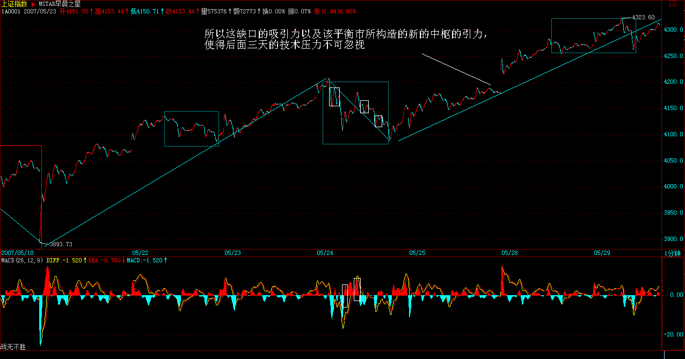
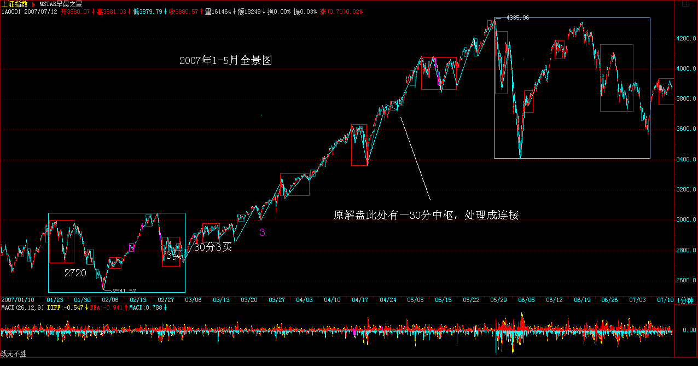
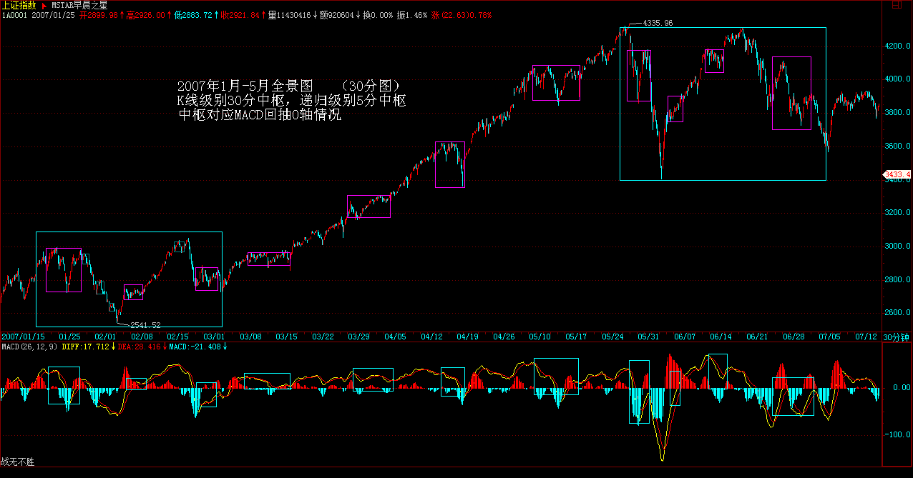

教你炒股票55：买之前戏，卖之高潮
(2007-05-28
08:12:41)
人的行为同构性，把性研究清楚，人的行为也就略知一二了。股票买卖，不过是人的行为之一，当然也不例外。这里极为严肃地讨论这个问题。
首先，先给股票定性别，为什么本ID总爱说股票是面首，因为他确实是面首，他是他，而不是她，股票的性别是男的，所以难。难什么？难在高潮之不可持续，高潮之后必有不应。而投资者应该是什么性别，投资者应该是她而不是他，投资者的投资能力就应该如女性性能力般可持续，无不应。以女“性”可持续之洪大去折服男“性”不可持续之弱小，这就是投资之道。
投资的关键就是女性，就是可持续，这与股票本身的男性，不可持续构成了投资中最大的矛盾。投资之道，就是驾御面首之道，就是御男之术，就是采阳补阴之方。采阳，要讲究其火候，火候太嫩，采之难以成丹，太老，同样是废物，如果是阳气外泄，化为污浊之精，则更是大煞风景。股票也一样，太早买入，一阳未生，则纯粹折腾，毫无趣味；待到高潮之刻不能及时采补，则阳气尽去，污精尽泄，烂蛇死鳝，反受其困。由于男“性”之不持续，则女“性”采补之关键，就是要取其精华，何谓其精华？一阳复始采之，阳极阴生弃之。用更通俗的话说，就是买之前戏，卖之高潮。
买和卖，是不对等的，相应的策略也是不一样的，为什么？因为买卖的前后状态是不同构的。在市场里，买是钱换筹码，卖是筹码换钱，钱是与时间无关的，1元，今天是，明天还是，只要还是钱，就是不变的。而筹码不是，今天的筹码价值与明天的就不同，而筹码的数量不变是没意义的，因为最终算的还是钱。而由于时间的不可逆转，因此（钱-筹码）与（筹码-钱）这两个结构，就不是同构的。这道理十分简单，谁都明白，但却是操作逻辑的基础，最基础的往往最简单。
因此，对于一个大级别的买的过程，或者说一个大的建仓过程，买必然是反复的，买中有卖，不断灵活地根据当下的走势去调整建仓的成本与数量，底部区域可以进行最复杂的中枢延伸与扩展，唯一的目的只有一个，取得足够的、成本不断降低的筹码。这不一定和坐庄有关，当然也可以相关。一个大级别的买的过程，某种程度上还兼备着改造这股票股性的任务，而且这也是一条底线，也就是能顺利退出的底线，在这个底部区域的股性改造中，也就是一个前戏的过程，没有好的前戏，不会有好的高潮。注意，底部不一定就是在一个平衡的水平线上中枢震荡，还可以是比较复杂的通道式上升，当然，一般来说，这种通道都是斜率很小的，充满激烈的震荡，具体的以后再说。
一个好的、具有诱人前戏的买，当脱离底部区域时，其成本应该早在该区域之下。而在大级别中枢上移中，只会减少成本，只有最愚蠢的拉抬，才会增加其成本。其后的活动，本质上只是股“性”不断激发，如同蜂王散发那诱惑引发那群雄蜂的追逐，这更如同一个壮观的NP过程，N不断增大，各种裂口、长阳，将这NP活动推向高潮。对于刚脱离底部的股票，第一次的高潮就如同一个淫乱狂欢夜的序幕，只不过是为第二、第三、第四、第五、第六、甚至第10次高潮进行铺垫。第一次高潮后的不应期往往不长，但可能很猛烈，震荡很激烈，不应期中还有继续高潮的冲力。这种股票，就如同刚被开发的面首，只有第二、三次，甚至第四、五次的高潮才会渐入佳境。而一个出色的卖，就是在那大级别高潮的后继乏力、背驰中退出，一个好的庄家或大资金操作者，最好的状态就是在那大级别的最后疯狂中被疯狂的雄蜂把货给抢光了，那种所谓筑平台出货的傻瓜，死去吧。
注意，本ID在上面是否正在进行一个AV的解说，这并不重要，重要的是，股票就是这样每天现场直播着这NP级别的AV。对于一般的散户投资者，在一些较大级别的介入中，例如日线以上的介入中，并不一定都要在第一类买点介入，因为，其后的前戏过程，并不一定是一般的散户可以忍受的，一般地，可以在第二类买点出现后才考虑介入，或者更干脆的，是第三类买点出现再介入。但如果资金有一定规模，需要一定数量的筹码，或者要为以后的猎鲸活动储备经验，一个至少从第二类买点开始利用部分前戏的介入是必须的，其中也要如大资金一样，有利用前戏的震荡降低成本、增加筹码的必要。这有什么好处？最重要的一个好处，就是熟悉其股性，一个前戏都不参与的，怎么可能在后面的N次高潮与不应中得心应手？
性，说白了就那么一回事，所有人的基本运转模式都是一样的，也就是前戏-高潮的模式。股票也一样，其运转的模式，归根结底，就是不同级别的中枢震荡与移动的组合最终构成相应的前戏-高潮模式，都一样，但在一样之中，每个股票都有其股性，涉及频率、幅度、形态复杂度等等，这些，对于每只股票都是独特的，这也就是为什么，依据同一模式展开的走势，却呈现千差万别的最终图形。
每日解盘（2007-05-28 15:37:32）
2007-05-28 15:37:32 周末没什么消息，憋了两天的能量在今天爆发，所以就搞出一个大缺口来，但其后的走势，并不是太强，依然只是一个平衡市，所以这缺口的吸引力以及该平衡市所构造的新的中枢的引力，使得后面三天的技术压力不可忽视。周四是月线收盘的位置，刚好也是缺口在技术上需要三天考验的时间，所以后面三天，多空的搏杀将极为惨烈。
大的方面看，4129点的1/2线在六月份将上移到4144点，该线的突破在日线上的回试确认并不能完全保证周线、月线上的回试确认，从最严格的意义上，在月线上至少需要3个月才能确认该线的真正有效突破。这就像1-3份在1/4线时所呈现的走势一样。当然，最理想，最强的走势就是，5月收光头阳线，六月以下影线的方式是确认该线的突破，七月继续长阳最终确认该突破的完全有效，但这只是最理想的情况，市场最终并不一定能走出来。
政策方面，关于操纵的条例周末已经在报纸上有所暴光，说实话，这条例才是一个真正的狠招，其中有些规定，对市场的格局有严重的影响，在本ID看来，这才是这两年来市场上飘来的真正的第一朵黑云，只是现在市场中散户太多，一般反应比较迟钝，所以没什么感觉。由于该条例只是一个草案，所以还有纠正的可能，下面，真正有意义的事情，就是对该条例进行无情打击，深入揭发，让该条例中严重危害市场的条款不能实施。
如果大盘本月不能收出光头阳线，该条款以及今后几天的一些政策面动态是主要的原因。但大家的心态要平和点，毕竟政策也是市场合力的一部分，他们也不容易，就原谅他们吧。
每日解盘（2007-05-29 15:31:36）

2007-05-29 15:31:36 离月线收盘还有两天，这两天极为关键，今天全天在昨天的中枢之上，因此技术上没有任何问题。今天走的是前三个30K的高低点都被打破的平衡市，明天要考验4323点早上高点的支持，如果不有效跌破该位置，大盘就超强，跌破，则形成新的中枢，该中枢基本以4300点为中线，然后又是中枢震荡直到第三买卖点出现的游戏。
前面已经反复说过，本ID的剧本是3之3，是否能最终成功，需要各方努力，这其中一方面，就对任何对市场有损害的东西，一定要及时全面地回击，例如昨天的解盘以及今天的文章，主要的目的就在此。如果人人都不说话，那么有些恶果就要种下。当以后品尝这些恶果时，就不要后悔当时为什么不一起努力把这恶种子给废了？市场是大家的，不是本ID一个人，也不是管理层的，恶草就要拔，这样市场才可能如剧本般发展下去。
刚才看了看回帖，有人觉得本ID要逃跑，还看空。真不知道这些人的语文是怎么学的。本ID哪个字说了要逃跑了，本ID说如果那东西成真了，本ID就不玩了，但那东西现在成真了？关键在于，那东西是否成真，是合力的结果，本ID的意思很明显，就是要一起来让那东西给废了。本ID早上还担心有人理解错误，9点还专门上来加了红字的一句：“但无论如何，中国大牛市的格局是不会因此改变的，而荒谬的东西，也是不可能真正实施的。”
知道孔子为什么是孔子吗？有一条就是最重要的，明知不可为而为之，现在，根本不存在不可为的前提，为什么不一起努力？剧本写好了，也要人来演的。


|